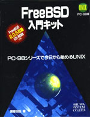
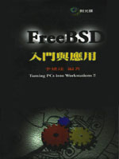
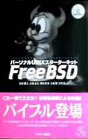
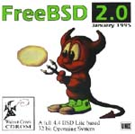
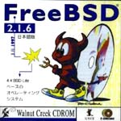
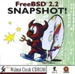

Aquí encontrarás las cubiertas de diferentes publicaciones
relacionadas con FreeBSD. Si conoces alguna publicación/CDROM
adicional sobre FreeBSD, por favor, haznoslo saber en la dirección
, para que podamos
añdirlo a este web.
Pulsa en cualquiera de los gráficos para ver una la imagen mayor.

| Esta es una reciente publicación (Mayo 1997) de Tatsumi
Hosokawa y otros. En el mundo de los libros de informática es un
top-seller en Japón, superando las ventas del libro
"The Road Ahead" de Bill Gates. |
 | (Libro de FreeBSD en japonés que incluye la
versión 2.0.5, titulado "FreeBSD: Fun and easy Installation") |
|  | (Libro de FreeBSD en japonés que incluye la
versión 2.0.5, titulado "FreeBSD Introductory Kit") |
 |
Este es el libro "FreeBSD Complete" de Walnut Creek CDROM con guía
de instalación, páginas man y 2 cd's de instalación.
|
| Libro de Walnut Creek CDROM titulado "Installing & Running FreeBSD",
que contenía las instrucciones de instalación y dos cd's. Ha sido
reemplazado por el más completo "FreeBSD Complete".
|
|  | Este libro recientemente publicado (principios de 1997) en Taiwan.
Su título es "FreeBSD: introduction and applications" y el autor es
Jian-Da Li.
|
 | Este es el libro "Getting Started with FreeBSD" de
Fuki-Shuppan. Trata tanto la instalación y entorno japonés como
la administración del sistema e información de bajo nivel (como
el proceso de arranque). FreeBSD-2.2.2R y XFree86-3.2 en CDROM. 264
páginas, 3,400 yen.
|
|  | "Personal UNIX® Starter Kit - FreeBSD" de ASCII. Incluye
la historia de UNIX®, una guía de creación de documentación
en japonés y cración de ports. 2.1.7.1R y XFree86-3.2
en CDROM.
|
 | BSD mit Methode, M. Schulze, B. Roehrig, M. Hoelzer und andere,
C&L Computer und Literatur Verlag, 1998, 850 pages.
2 CDROMs, FreeBSD 2.2.6, NetBSD 1.2.1 and 1.3.2, OpenBSD 2.2
and 2.3. DM 98,-.
|
 | Este es el BSDisc de InfoMagic, conteniendo FreeBSD 2.0
y NetBSD 1.0 en un solo CD.
|
 | Esta es la release original de 4.4 BSD Lite2 de UC
Berkeley, la tecnología básica de FreeBSD.
|
 | La primera de las series "BSD" de Laser5. Contiene
FreeBSD-2.0.5R, NetBSD-1.0, XFree86-3.1.1 y el kernel FreeBSD(98). |
 | The second of Laser5's "BSD" series. From this version, the CDs come
in a standard jewel box. Contains FreeBSD-2.1R, NetBSD-1.1,
XFree86-3.1.2 and 3.1.2A, and FreeBSD(98) kernel (2.0.5).
|
 | This is the Laser5 Japanese edition of the
FreeBSD CDROM. It is a 4 CD set.
|
 | This is the only FreeBSD CD Pacific Hitech produced before merging their
product line with that of Walnut Creek CDROM. PHT now also produces the
FreeBSD/J (Japanese) CD product. |
 | This is the cover disc from the Korean magazine.
Note the creative cover art! The CD contains the FreeBSD 2.2.1 release
with some local additions. |
 | This is it - the very first FreeBSD CD published! Both the FreeBSD
Project and Walnut Creek CDROM were fairly young back then, and you'll
probably have little difficulty in spotting the differences in production
quality between then and now.
|
 | This was the second FreeBSD CD published by Walnut Creek CDROM and also the
very last on the 1.x branch (ref USL/Novell lawsuit and settlement). The next release, FreeBSD 1.1.5, was only
available on the net.
|
 | This unusual CD is something of a collector's item now given that almost
all existing examples were systematically tracked down and destroyed.
An artwork mishap has this CD dated for the wrong year, and on the spine
"January" is also misspelled as "Jaunary", just to increase the embarrassment
factor. Ah, the perils of turning in one's artwork just hours before leaving for
a trade show.
|
|  | This is the fixed-up version of the FreeBSD 2.0 CD.
Note that the color scheme has even been changed in the corrected version,
something unusual for a fixup and perhaps done to distance it from the
earlier mistake. |
 | The FreeBSD 2.0.5 release CD. This was the first CD to feature Tatsumi Hosokawa's daemon
artwork. |
 | The FreeBSD 2.1 release CD. This was the first CD release on the 2.1 branch
(the last being 2.1.7). |
 | The FreeBSD 2.1.5 release CD. |
 | The FreeBSD 2.1.6 release CD. |
|  | The Japanese version of 2.1.6. This was the first and last Japanese
localized version published by WC, responsibility for that product then
transitioning to a team led by Tatsumi Hosokawa and sponsored by
Pacific Hitech and Laser5.
|
 | The FreeBSD 2.1.7 release CD. Also the last CD released on the 2.1.x
branch. Done primarily as a security fixup for 2.1.6
|
|  | An early release SNAPshot of 2.2 (done before 2.2.1 was released).
|
 | The FreeBSD 2.2.1 release CD. This was the first CD on the 2.2 branch.
|
 | The FreeBSD 2.2.2 release CD.
|
 | The FreeBSD 3.0 snapshot CD.
|
 | The FreeBSD mailing list and newsgroup archives, turned into HTML and
semi-indexed by thread. This product ran for 2 releases and then stopped
with a thud once it became obvious that there was simply too much data to
deal with on one CD. Perhaps when DVD becomes more popular...
|


{kind=link}
{kind=link}
{kind=link}
{kind=link}


{kind=link}
{kind=link}
{kind=link}


{kind=link}
{kind=link}